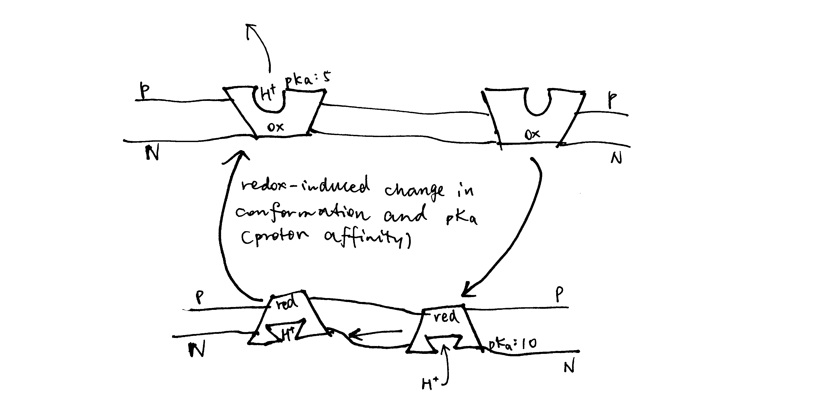
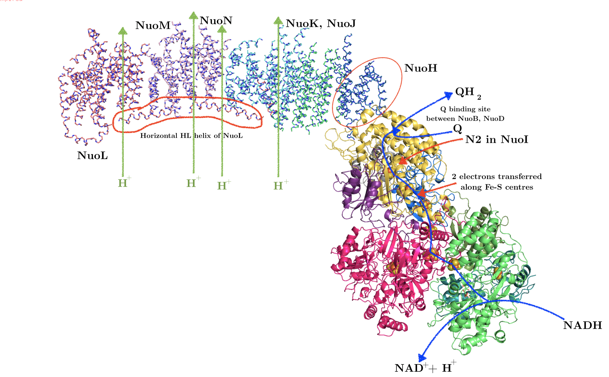
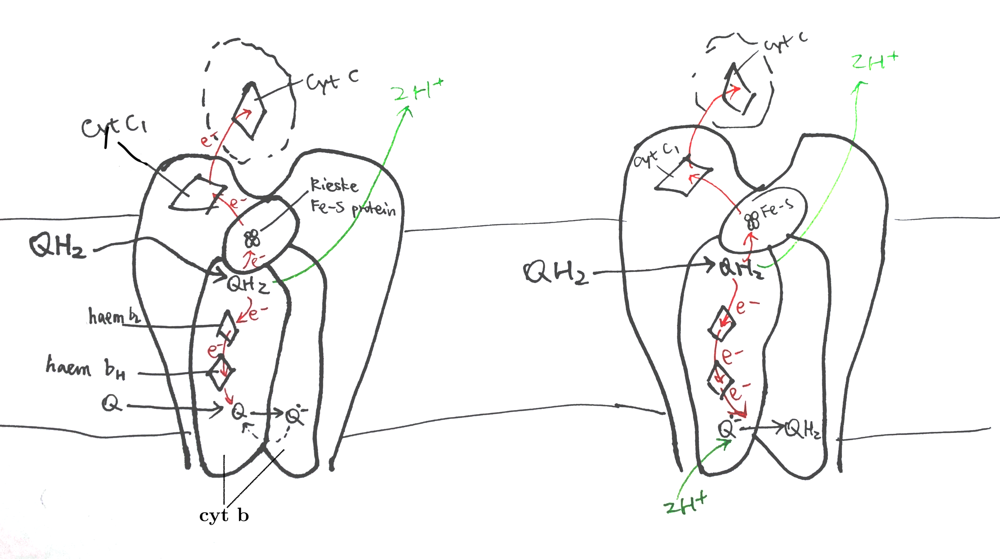
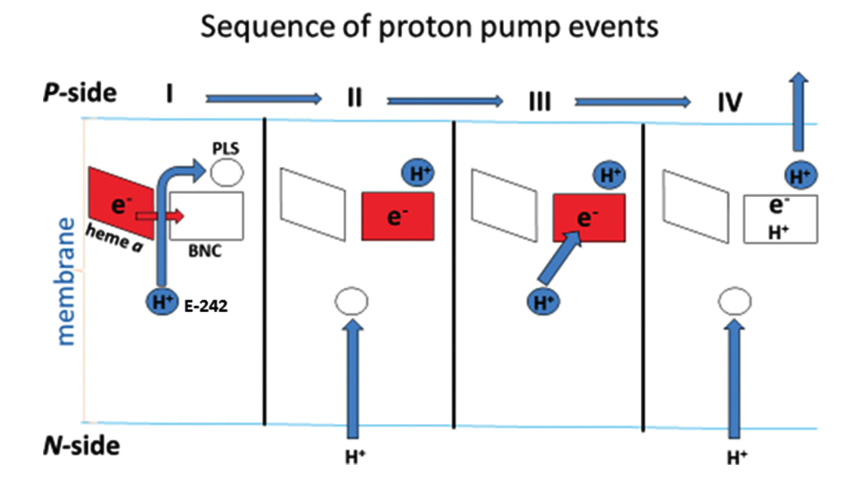

2020
What effects do the intensity and duration of exercise have on fuel selection by mammalian muscle?
1 Introduction
During exercise, glucose and fatty acids are the fuels used by the muscle. Their origin and relative contribution depend on the intensity and duration of exercise, as well as on characteristics of individuals such as the level of physical training.
2 Overview
As shown in Figure 1, muscle contraction during exercise is powered by oxidation of glucose and fatty acids derived from a number of sources.

Figure 2.1: Sources of fuel during exercise. (1) white adipose tissue lipolysis; (2) intramuscular triglycerides (IMTG); (3) plasma TG (mainly contained in VLDL synthesised by the liver); (4) mucle glycogenolysis; blood glucose derived from liver glycogenolysis (5) and gluconeogenesis (6).
Immediately after the onset of exercise (0-30 s) energy is derived predominantly from anaerobic respiration. After this period, both excercise intensity and duration determine the choice of fuel used for oxidation. As shown in Figure 2, during the first 30 minutes of a low-intensity exercise bout, the vast majority of fuel used by muscle is plasma NEFA (non-esterified fatty acids) originated from adipose lipolysis with tiny contributions from IMTG (intramuscular triglyceride) and plasma glucose. For moderately intense exercise, the contribution from fat is lower: plasma NEFA and IMTG each represent about 25% of total energy expenditure, and glycogen and plasma glucose account for the remaining 40% and 10%. For high-intensity exercise, the contribution from muscle glycogen is even higher (60%), and fat and glucose represents 30% and 10% of the total, respectively. Overall, as exercise intensity increases, carbohydrates (especially muscle glycogen) progressively becomes the preferred fuel over triglyceride-derived fuel. As for TG-derived fuel, the ratio of IMTG to plasma NEFA is greatest during moderately intense exercise and lowest during low-intensity excercise. These are explained in detail later.
Figure 2 also shows that, during prolonged (low- or moderate-intensity) exercise, the contribution from plasma NEFA increases and the contribution from other fuels decreases, regardless of exercise intensity. This is due to the large amount of TG reserve in adipose tissue and the gradual depletion of other fuels.

Figure 2.2: Effects of exercise intensity and duration on choice of substrates. ‘Percentage of VO2max’, where VO2max is the highest rate of ATP generation via oxidative phosphorylation attainable, is a normalised parameter used to measure relative exercise intensity. Exercise requiring less than 30% VO2max is considered low-intensity; 50%-70%, moderate intensity; 70-85%, high-intensity.
2.1 Glycogen and Glucose
2.1.1 Blood Glucose
During exercise, catecholamines stimulates pancreatic \(\alpha\) cells to secrete glucagon, which in turn promtotes hepatic glycogenolysis and gluconeogenesis. Both processes release glucose into the bloodstream.
Blood glucose is the predominant source of carbohydrate for oxidation in muscle. Its absolute amount of usage increases as excercise intensity increases (though proportionally remains largely unchanged), which is mediated by an increaed sensitivity to insulin (in part due to utilisation of IMTG) and thus increased translocation of GLUT4 to the cell surface membrane.
2.1.2 Regulation of Glycogenolysis
Glycogen phosphorylase (GP) and phosphorylase kinase (PhK) are central to the regulation of glycogenolysis. Activated PhK phosphorylates GP, thus converting it from the inactive b form to the active a form. GP in its a form then phosphorolyses glycogen, releasing glucose 1-phosphase available for oxidation.
PhK is activated (1) by phosphorylation on \(\alpha\) and \(\beta\) subunits by PKA and (2) by binding of Ca2+ to \(\delta\) subunit. PKA is activated upon catecholamine (mostly adrenaline) binding to cell surface receptors (via Gs, adenylyl cyclase, and cAMP), and Ca2+ is released upon muscle contraction (stimulated by acetylcholine).
Ca2+ released upon muscle contraction results in a burst of glycogenolysis. The large amount of glycogen breakdown exceeds muscle’s energy requirement and capacity of TCA cycle, resulting in accumulation of lactate. This probably explains the short period of anaerobic respiration at the onset of exercise. After a few minutes, the activation of phosphorylase reverses by a mechanism that is not fully understood.
Myocytes also respond, via \(\beta\) adrenergic receptors, to catecholamines that are produced proportionally to exercise intensity. This results in activation of PKA (via Gs, AC and cAMP), which in turn activates glycogenolysis.
The rate of glycogenolysis also depends on availability of Pi, the substrate of glycogen phosphorylase. At rest and during mild exercise, fatty acid oxidation is capable of generating sufficient ATP, resulting in low Pi concentration. Availability of Pi increases as exercise intensity increases because the rate of ATP hydrolysis exceeds the rate of convertion from ADP and Pi back to ATP by oxidation of fatty acids (and plasma glucose).
2.2 Fatty Acids
During exercise, the usage of fatty acids has an important role of delaying the onset of glycogen depletion and hypoglycemia. Its contribution to total energy expenditure increases as excercise proceeds. However, its usage is limited during strenuous exercise.
2.2.1 Adipose Tissue Lipolysis and Plasma NEFA
Compared to resting conditions, adipose tissue lipolysis occurs at a higher rate during mild- or moderate-intensity exercise. This is mainly mediated by increased \(\beta\)-adrenergic receptor activation by catecholamines released by the adrenal gland upon sympathetic nerve stimulation. Exercise also increases blood flow in adipose tissue (which prevents toxic regional accumulation of fatty acids) and in muscle, thus promoting transport of NEFA to myocytes. Passive uptake of NEFA by myocytes, which is proportional to plasma NEFA concentration, is thus increased. AMPK, which is activated upon transition from rest to exercise and during prolonged exercise, phosphorylates ACC2 and malonyl-CoA decarboxylase, inhibiting the former and activating the latter, thus resulting in a decrease of malonyl-CoA concentration and hence releasing CPT-1 from inhibition. This promotes transport of fatty acids into mitochondria for \(\beta\)-oxidation in muscle cells.
As the exercise intensity continue to increase, however, oxidation of NEFA derived from adipose tissue lipolysis in muscle decreases. This is in part caused by decreased rate of lipolysis due to lactate (through activation of an orphan GPCR, GPR81). Lactate can also increase re-esterification of fatty acids to TG in the liver. Raising plasma fatty acid concentrations by intravenously infusing a lipid emulsion and heparin during the exercise bout increases plasma NEFA oxidation by about 30% but does not completely restore it to the rate observed during moderate-intensity exercise. Thus, high-intensity exercise also decreases the capacity of skeletal muscle to oxidise fatty acids, which is in part caused by increased glycogen catabolism. As more acetyl-CoA concentration are produced via glycogen catabolism, they are converted to malonyl-CoA by ACC2 located on the outer mitochondrial membrane, and the malonyl-CoA then inhibits CPT-1 and hence fatty acid oxidation.
2.2.2 Intramuscular Triacylglycerol (IMTG)
Within myocytes, there are lipid droplets that stores TG. Their usage during exercise can be calculated by subtracting plasma fatty acid oxidation (determined by isotope tracers) from whole-body fat oxidation (determined by indirect calorimetry).
IMTG use is stimulated by catecholamines via \(\beta\) adrenergic receptors. This is supported by the finding that pharmarcological blockage of \(\beta_1 + \beta_2\) prevents the usage of IMTG.
2.2.3 Plasma TG (VLDL-TG)
The liver takes up plasma NEFA and glycerol and use some of them to resynthesise TG. These TG are packaged in VLDL and released into the bloodstream. Muscle can break down some VLDL by lipoprotein lipase and oxidise the resulting fatty acids. However, this only contributes to a small fraction of energy usage during exercise and might be more important for replenishing IMTG stores after exercise.
2019
What mechanisms are employed by mitochondrial electron transfer proteins to generate a proton-motive force (pmf)? Using the concept of membrane capacitance, explain why the dominant component of the pmf in mitochondria is an electrical potential rather than a pH gradient.


SAQ
Using the physical chemistry principles, discuss factors which are contributed in the favourability of an electron transfer reactions between cofactors.
The reduction potential, \(E\), is used to quantify favourability of gaining electrons (getting reduced). \(E^{\circ\prime}\) is the reduction potential measured under biological standard conditions (i.e. pH = 7, oxidised and reduced species are 1M, 298K and 1 atm). When concentrations of the oxidised and reduced species differ:
\[E=E^{\circ\prime} + \dfrac{RT}{zF}\ln\left(\dfrac{\text{[reduced]}}{\text{[oxidised]}}\right)\]
For two half equations, A+ + \(e^-\rightarrow\) A and \(\text{B} + e^- \rightarrow\) B- with \(E\) of \(x\) and \(y\) respectively, a full reaction equation can be constructed, which can be A+ + B- \(\rightarrow\) A + B (with \(E_\text{r}\) = x - y) or the reverse (with \(E_\text{r}\) = y - x); the one with positive \(E_\text{r}\) (reaction potential) will actually occur.
Electron transfers occur because electrons are moving down to a lower energy level. In simple cases, atoms with greater electronegativity have greater affinity for electrons and thus a more positive reduction potential, and vice versa. This is the case for strong oxidants F2 and Cl2 (electronegative; highly positive \(E\)) and strong reductants Li and Na (electropositive, highly negative \(E\)). In most cases, however, other factors, such as change in state, conformation, or interactions with water, will significantly affect the reduction potential. For example, Cu and Ag is less electronegative than hydrogen, but their monovalent ions are more easily reduced than H+. That is mainly because the formation of metallic solid upon reduction is highly exergonic. Similarly, although the atoms involved in the redox reactions in the repiratory chain are not variable (Cu and Fe), they have different \(E\) due to the enviornment (e.g. proximity to the P/N face, identity of ligands).
The series of cofactors along the electron transport chain have a generally steadily increasing \(E^{\circ\prime}\), so electrons are moved toward increasingly lower energy levels. There are some exceptions to this trend, but \(E_\text{r}\) would be made positive in these cases by making a concentration difference (usually by means of ‘pulling’ from the next redox centre with favourable \(E\)).
While the thermodynamic feasibility of the redox reactions is solely determined by the difference in the reduction potentials (which is proportional to Gibbs free energy), the kinetics (rates) are affected by more factors.
Electrons are passed from one centre to another by tunnelling. Specifically, the wave function for an electron in the donor shows there is a probability that the electron will be found at an acceptor some distance away. Tunnelling is independent of temperature and orientation of chemical groups, but is instead influenced by 1) the distance between the electron donor and acceptor, 2) the redox potential difference, \(E\), and 3) the ‘reorganisation energy’, \(\lambda\).
Within each respiratory complex, the redox centres are close to each other—no more than 14Å apart (the maxium 14Å is found between N5 and N6a Fe-S clusters in complex I). Ubiquinone has binding sites in complex I (II) and III in close proximity to the redox centres from which it receives and to which it delivers electrons, and the same is true for cyt c (which binds to complex III and IV). This arrangement makes the numerous electron transfer steps not the limiting factor in the respiratory chain.
Essay
What mechanisms are employed by mitochondrial electron transfer proteins to generate a proton-motive force (pmf)? Using the concept of membrane capacitance, explain why the dominant component of the pmf in mitochondria is an electrical potential rather than a pH gradient.
Two Proton Translocation Models: Loop and Pump
Mechanisms of coupling redox reactions to proton translocation can be classified into two models: the chemical loop, and the conformational pump.
In the loop model shown in Figure 1, the hydrogens (protons plus electrons) from the substrate (AH2) first reduce an mediator molecule (B) on the N side, and this mediator is reoxidised, forcing protons to be released to the P side via one pathway and electrons to flow back to the N side via another pathway. The electrons then reduce another species (C) using protons from the N side. This mechanism is employed in the respiratory chain, where ubiquinone serves as the ‘mediator’ molecule and ETC components from Rieske Fe-S protein in complex III to CuB centre in complex IV as the electron pathway. The number of protons translocated in this way has to follow a fixed stoichiometry (i.e. 1 proton per electron). (Not shown in this diagram, the reduction of Q near the N face driven by QH2 oxidation near the P face in the Q cycle is also an example of this mechanism.)
Figure 1: The loop model. Left, generic form; right, simplified example found in the respiratory chain.
The key idea of the pump mechanism is the conformational change driven by redox reactions. Conformational change can lead to alternating proton accessibility from the two faces and differential pKa values of proton binding sites, resulting in proton translocation (explained in Figure 2). The number of protons pumped in this way does not have to follow a fixed stoichiometry within the thermodynamic constraints (i.e. Er/n must be greater than ∆p). This mechanism is thought to be employed in complex I and IV of the respiratory chain. However, recent studies have shown that complex IV may adopt a unique mechanism, as explained later in this essay.

Figure 2: The conformational pump mechanism. When the “pump” protein is reduced, the proton binding site is exposed to the N face and with high pKa, promoting proton binding; upon oxidation, the proton binding site is open to the P face, and pKa drops, promoting proton dissociation.
Complex I
As shown in Figure 3, bacterial complex I (from Thermus thermophilus) comprises two domains. The hydrophobic, transmembrane domain (a.k.a. membrane arm) has a proton-translocating P-module and subunit NuoH. The hydrophilic domain (a.k.a. peripheral domain) has an NADH-oxidising dehydrogenase module (N-module) which feeds electrons to the electron-transferring chain of Fe-S clusters, and the connecting Q-module, which reduces ubiquinone. Mammalian mitochondrial complex I is similar in gross organisation and function, although it possesses more subunits.

Figure 3: Annotated structure of bacterial complex I. PDB accession code: 3M9S
Hydrophilic domain (peripheral arm)
All FMN and the seven (bacteria have additional two redundant ones) Fe-S centres reside in the hydrophilic domain. FMN, which is located at the extremity of the hydrophilic arm, accepts two electrons from NADH2 and transfers them one by one to the nearest Fe-S centre (N3). Electrons then flow from N3 through a series of isopotential Fe-S centres and finally to N2, whose \(E^\circ\) is significantly less negative (-100 mV) (Sazanov and Hinchliffe 2006). The ubiquinone is then reduced by two one-electron gaining from N2; the existence of at least two forms of semiquinone is identified by electron paramagnetic resonance.
Hydrophobic domain (membrane arm)
The hydrophobic domain comprises subunits NuoAHJKLMN, of which NuoLMN are homologous to bacterial Mrp Na+/H+ antiporters (characterised by the conserved 14 transmembrane helices).
At the centre of each antiporter-like subunit (NuoLMN), two transmembrane helices are ‘broken’ and each have a kink known as a ‘π-bulge’, and there is a lysine residue in this region (Glu407 for NuoM) critical to proton pumping, confirmed by mutagenesis studies. There are two symmetry-related plausible proton channels lined by hydrophilic/charged residues, one connecting the central lysine on one broken TM to the P face and the other connecting lysine of the other TM to the N face.
Figure 4: Plausible proton paths
As shown in Figure 5, NuoL/M/N may work by using conformational changes (induced from the hydrophilic domain) to transfer a proton from the lysines on the helix with N half channel to the other lysine (or Glu in NuoM) on the helix with P half channel, and if the pKas of the two lysines differ, this leads to unidirectional proton transport. This mechanism is in accordance with the general scheme shown in Figure 2.
Figure 5: Schematic diagram of proton translocation in complex I
The three antiporter-related subunits are thought to be responsible for the translocation of 3 protons per 2 \(e^-\). An additional channel is found at the interface of subunits NuoN,K,J,A (according to Efremov and Sazanov (2011) and Sazanov (2015) or NuoH,J,K according to Hirst (2013) and Nicholls and Ferguson (2013)) and they are thought to act together to pump another proton with a similar mechanism involving protonation/deprotonation of lysine.
Coupling
It is debated how the redox reactions in the hydrophilic domain triggers conformational change, and how this conformational change is transmitted along the hydrophobic domain.
Some features of the Fe-S centre N2 (the last Fe-S centre in complex I) led to hypotheses in which N2 plays a major role in pumping protons1,2, but currently, the mainstream idea is that the initial conformational change in the hydrophilic domain is contributed mostly by the reduction of ubiquinone.
As claimed by Wirth et al. (2016), reduction of ubiquinone is a two-step process, where the Q binding site cycles between a conformation that permits electron transfer (E-state), and a conformation that permits proton transfer (P-state) onto intermediates of ubiquinone. The conformational change associated with this controlled process is assumed to initiate proton translocation.
It was originally suggested that the horizontal HL helix (see Figure 3) in NuoL could move horizontally like a piston to transmit conformational change along the hydrophobic domain3, but now, after realising the similarity between NuoH and NuoL/M/N, it is thought that conformational changes associated with π-bulges in the mid-membrane parts are transmitted laterally to NuoN/M/L (Nicholls and Ferguson 2013), and, as suggested by Wirth et al. (2016), this is achieved by electrostatic coupling in the central hydrophilic axis.
As I mentioned last week (Shi 2019), as there is no complete evidence demonstrating how complex I proton pump works, other hypotheses exists, including a radical one recently proposed by Morelli et al. (2019), which emphasises the elusiveness of the ‘proton entrance half channel’ (from the middle Lys to the N face) contrasted by the clarity of the ‘proton exit half channel’ (to the P face). Together with another piece of evidence that an obvious proton tunnelling is found at the centre of complex I, Morelli drafted an lateral mechanism of proton circuiting, as shown in Figure 6
Figure 6: A possible lateral proton circuit suggested by Morelli (2019). Protons are only pumped from the middle to the P side, then trasferred through the hydrophilic heads of phospholipids to ATP synthase. After a complete turn in ATP synthase, protons move back through channelling in the middle of the membrane to complex I, but not to the N side
Complex III (cyt bc1 complex)
Complex III is a homodimer, with each monomer consisting of three subunits: cytochrome b, the Rieske iron-sulfur protein, and cytochrome c1. Each monomer has two binding sites for ubiquinone, called QN and QP, indicating their proximities to two opposite faces.
Uniquinone oxidation and proton translocation is coupled in the Q cycle, as illustrated in Figure 7.

Figure 7: The Q cycle. Left, stage 1; right, stage 2.
In stage 1, QH2 binds to QN of one dimer and a Q binds to the QP of another dimer. The QH2 at QN is oxidised by two electron acceptors in two steps: the first electron is accepted by the Rieske iron-sulfur protein and passed though cytochrome c1 and finally to cytochrome c, and second other electron is accepted by cytochrome b, passed through its two hemes (bH and bL) and finally to the Q at QP on the other monomer, forming semiquinone. The two protons of QH2 are released into the P face (the molecular details is unclear).
In stage 2, the same process is repeated—one QH2 is oxidised to Q, its protons released and electrons passed 1) onto one cytochrome c and 2) to the other side—but this time the electron acceptor on the other side is semiquinone. Acceptance of an electron by semiquinone, and the addition of two protons from the matrix, produces QH2.
Complex IV
Complex IV (cytochrome oxidase) accepts electrons from cytochrome c to reduce oxygen to water and pumps 2 electrons to the P face.
Previous X-ray studies suggested that complex IV exists as dimers with each monomer comprising 13 subunits (Tsukihara et al. 1996). However, it was recently shown by Zong et al. (2018) that complex IV is actually a 14-subunit monomer, and dimerisation was an artifect due to the dissociation of NDUFA4 subunit during the detergent-based purification steps before crystallisation (NDUFA4 hampers dimerisation).
Reduction of oxygen
The key catalytic activities are found in subunit I and II, as shown in Fig. 8
Figure 8: Schematic diagram of complex IV with emphasis on the electron-transport and catalytic activities of subunit I and II.
Each cytochrome c first donates one electron to CuA located in the globular domain of subunit II. CuA is a binulear centre, but it undergoes one-electron redox reactions. The electron is then passed onto haem a, and then to haem a3-CuB binuclear centre, where an oxygen molecule is bound. 4 electrons from cyt c and 4 protons from the N phase are required to reduce one oxygen molecule to two water molecules. CuB has three His ligands, and the forth empty coordination site mediates oxygen reduction by holding the intermediates (its malfunction leads to generation of ROS).
Pump mechanism
For each pair of electrons, 2 H+ from N phase is consumed to make water and another 2 H+ is pumped intot he P phase.
According to a recent review by Wikström and Sharma (2018), the favoured charge-conpensation mechanism is as follows: (see Figure 9)
- when an electron is transferred from haem a to the haem a3-CuB binulear centre (BNC), one proton from Glu242 is loaded onto the ‘proton loading site’ (PLS4). This is a purely electrostatic event (not acid-base, as pKa of PLS is not high enough).
- reprotonated Glu242 transfers another proton to BNC, annihilating the -ve charge in BNC, so H+ on PLS can leave. There must be a barrier preventing H+ flowing back to the N side, which can be achieved by raising the energy of the transition state of proton transfer between the Glu242 and PLS.

Figure 9: Charge-compensation mechanism of proton pumping in complex IV.
Components of pmf in chloroplasts and mitochondria
In mitochondria, the major component of protomotive force (\(\Delta p\)) is the membrane potential (\(\Delta \Psi\)), while in chloroplasts it is \(\Delta\)pH. This is caused by the physiology of these organelles and the electrical properties of membranes.
In chloroplasts, when protons are being pumped into the thylakoid space, the developed membrane potential is balanced out by efflux of K+ and influx of Cl– through voltage-gated channels, such as KEA3 K+/H+ antiporter and voltage-gated VCCN1 Cl– channel, so it results in a pure pH difference. TPK3 was originally thought to be one of such channels but was recently shown to be not critical (Höhner et al. 2019). There are not many enzymes in the thylakoid lumen, so a low pH is not unsafe. In addition, the high H+ concentration has regulatroy functions. (Höhner et al. 2019)
If mitochondria were allowed to develop such a pH difference (very basic matrix), this would denature the numerous enzymes, such as those involved in \(\beta\)-oxidation and TCA cycle, that operate inside the matrix. In mitochondria, there are not such ion channels to counteract change in \(\Delta \Psi\), so proton translocation results in charge imbalance, leading to \(\Delta \Psi\) change5, and a significant membrane potential can be established with only minuscule amount of charge movement.This can be explained by the low capacitance of the membrane. Capacitance is the amount of charge separation needed to develop unit voltage difference, i.e.
\[C=\dfrac{Q}{V}\]
Given a constant \(V\) (\(\Delta \Psi\)), lower capacitance means smaller charge difference is required to build up that voltage difference.
Figure 10 shows a simple parallel-plate capacitor, which is analogous to mitochondrial inner membrane.
Figure 10: Illustration of a simple parallel-plate capacitor
The electrical capacitance of such a plate can be calculated as:
\[C = \dfrac{\epsilon A}{d}\]
where \(\epsilon\) is the permittivity of the plate, \(A\) is the surface area and \(d\) is the distance separating charges. For mitochondrial inner membrane, although \(\dfrac{A}{d}\) is large, \(\epsilon\) is very small, so the overall capacitance is small.
A failed quantitative analysis
According to Liang et al. (2017), the cell membrane capacitance is aroud 10 mF/m2, and in the Bioenergetics book (Nicholls and Ferguson 2013), the capacitance of the mitochondrial inner membrane takes the same valu. According to a model built by Mannella, Lederer, and Jafri (2013), one mitochondria with matrix volume of \(9.6\times10^4\) nm^3 would have a inner membrane (cristae) surface area of \(5.76\times10^6\) nm2.
With these values, to build up a \(\Delta \Psi\) of -140 mV, the charge required is:
\[Q=CV=0.01\text{F m}^{-2} \times 5.76 \times 10^{-12}\text{m}^{-2}\times 0.14\text{V}=8.1 \times 10^{-15} \text{ C}\]
which corresponds to \(8.1 \times 10^{-15}/96450=8.4 \times 10^{-20}\) moles of H+, or \(8.4 \times 10^{-20}/(9.6\times 10^{-20})=0.875\) M (concentration), which is not realistic…
References
Efremov, Rouslan G., and Leonid A. Sazanov. 2011. “Structure of the Membrane Domain of Respiratory Complex I.” Nature 476 (7361): 414–20. https://doi.org/10.1038/nature10330.
Hirst, Judy. 2013. “Mitochondrial Complex I.” Annual Review of Biochemistry 82 (1). Annual Reviews: 551–75. https://doi.org/10.1146/annurev-biochem-070511-103700.
Höhner, Ricarda, Viviana Correa Galvis, Deserah D. Strand, Carsten Völkner, Moritz Krämer, Michaela Messer, Firdevs Dinc, et al. 2019. “Photosynthesis in Arabidopsis Is Unaffected by the Function of the Vacuolar K\(<\)sup\(>\)+\(<\)/Sup\(>\) Channel Tpk3.” Plant Physiology 180 (3): 1322. https://doi.org/10.1104/pp.19.00255.
Liang, Wenfeng, Yuliang Zhao, Lianqing Liu, Yuechao Wang, Wen Jung Li, and Gwo-Bin Lee. 2017. “Determination of Cell Membrane Capacitance and Conductance via Optically Induced Electrokinetics.” Biophysical Journal 113 (7): 1531–9. https://doi.org/https://doi.org/10.1016/j.bpj.2017.08.006.
Mannella, Carmen A., W. Jonathan Lederer, and M. Saleet Jafri. 2013. “The Connection Between Inner Membrane Topology and Mitochondrial Function.” Journal of Molecular and Cellular Cardiology 62: 51–57. https://doi.org/https://doi.org/10.1016/j.yjmcc.2013.05.001.
Morelli, Alessandro Maria, Silvia Ravera, Daniela Calzia, and Isabella Panfoli. 2019. “An Update of the Chemiosmotic Theory as Suggested by Possible Proton Currents Inside the Coupling Membrane.” Journal Article. Open Biology 9 (4): 180221. https://doi.org/10.1098/rsob.180221.
Nelson, David L., and Michael M. Cox. 2017. Lehninger Principles of Biochemistry. Book. 7th ed. W. H. Freeman. https://search.library.wisc.edu/catalog/999964334502121.
Nicholls, David G., and Stuart J. Ferguson. 2013. Bioenergetics. Book. 4th ed. Amsterdam: Academic Press, Elsevier.
Roessler, Maxie M., Martin S. King, Alan J. Robinson, Fraser A. Armstrong, Jeffrey Harmer, and Judy Hirst. 2010. “Direct Assignment of Epr Spectra to Structurally Defined Iron-Sulfur Clusters in Complex I by Double Electron–Electron Resonance.” Proceedings of the National Academy of Sciences 107 (5): 1930. https://doi.org/10.1073/pnas.0908050107.
Sazanov, Leonid A. 2015. “A Giant Molecular Proton Pump: Structure and Mechanism of Respiratory Complex I.” Nature Reviews Molecular Cell Biology 16. Nature Publishing Group, a division of Macmillan Publishers Limited. All Rights Reserved. SN -: 375 EP. https://doi.org/10.1038/nrm3997.
Sazanov, Leonid A., and Philip Hinchliffe. 2006. “Structure of the Hydrophilic Domain of Respiratory Complex I from Thermus Thermophilus.” Science 311 (5766): 1430. https://doi.org/10.1126/science.1123809.
Shi, Tianyi. 2019. “Principle of Chemiosmotic Mechanism.” 2019.
Tsukihara, Tomitake, Hiroshi Aoyama, Eiki Yamashita, Takashi Tomizaki, Hiroshi Yamaguchi, Kyoko Shinzawa-Itoh, Ryosuke Nakashima, Rieko Yaono, and Shinya Yoshikawa. 1996. “The Whole Structure of the 13-Subunit Oxidized Cytochrome c Oxidase at 2.8 Å.” Science 272 (5265): 1136. https://doi.org/10.1126/science.272.5265.1136.
Verkhovskaya, Marina, and Dmitry A. Bloch. 2013. “Energy-Converting Respiratory Complex I: On the Way to the Molecular Mechanism of the Proton Pump.” The International Journal of Biochemistry & Cell Biology 45 (2): 491–511. https://doi.org/https://doi.org/10.1016/j.biocel.2012.08.024.
Wikström, Mårten, and Vivek Sharma. 2018. “Proton Pumping by Cytochrome c Oxidase – a 40 year Anniversary.” Biochimica et Biophysica Acta (BBA) - Bioenergetics 1859 (9): 692–98. https://doi.org/https://doi.org/10.1016/j.bbabio.2018.03.009.
Wirth, Christophe, Ulrich Brandt, Carola Hunte, and Volker Zickermann. 2016. “Structure and Function of Mitochondrial Complex I.” Biochimica et Biophysica Acta (BBA) - Bioenergetics 1857 (7): 902–14. https://doi.org/https://doi.org/10.1016/j.bbabio.2016.02.013.
Zong, Shuai, Meng Wu, Jinke Gu, Tianya Liu, Runyu Guo, and Maojun Yang. 2018. “Structure of the Intact 14-Subunit Human Cytochrome c Oxidase.” Cell Research 28 (10): 1026–34. https://doi.org/10.1038/s41422-018-0071-1.
Zwicker, K., A. Galkin, S. Drose, L. Grgic, S. Kerscher, and U. Brandt. 2006. “The Redox-Bohr Group Associated with Iron-Sulfur Cluster N2 of Complex I.” Journal Article. J Biol Chem 281 (32): 23013–7. https://doi.org/10.1074/jbc.M603442200.
In some papers (Hirst 2013; Verkhovskaya and Bloch 2013) it was suggested that coupling of electron transport to movement of protons depends on the significantly exergonic reduction of the N2 centre by the roughly isopotential wire of Fe-S centres that delivers electrons from NADH, and the large Em,7 span from N3 to N2 must provide the majority of the driving force for the proton pumping events associated with reduction and reoxidation of N2. This may be incorrect, as newest measurements (Sazanov 2015) of redox potentials of the full Fe-S series (N3-N1b-N4-N5-N6a-N6b-N2) shows that N3, N4 and N6 are about equipotential at about -250 mV, while N1b, N5 and N6b actually have lower potentials; and such an arrangement is claimed by Roessler et al. (2010) to be energy efficient.↩
The mid-point reduction potential of N2 is shown to be pH-dependent, so that Eacid > Ealkaline, and indeed a proton binding site is present there: His226 in Y. lipolytica, and protons are more likely to bind when N2 is reduced. However, shifting the midpoint potential to a more negative and pH insensitive value by exchanging His226 with a methionine affected the functioning of complex I including proton pumping only marginally. (Zwicker et al. 2006)↩
The alternative role of HL would be to stabilise ends of the helices while permitting movement of the middle hydrophilic axis.↩
Although the identity of PLS is uncertain, many studies indicates that it may be the A-propionate substituent of haem a3.↩
To be precise, when ∆p = 0, there is still (negative) membrane potential (\(\Delta \Psi\)), and H+ equilibrate under this \(\Delta \Psi\), which results in a lower pH inside (more concentrated H+). The \(\Delta \Psi\) that contributes to ∆p is actually the \(change\) in \(\Delta \Psi\) caused by proton translocation.↩